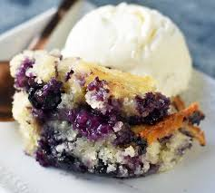

Blueberry Cobbler

A cobbler is a deep-dish fruit dessert featuring a sweetened fruit
filling topped with a biscuit-like dough, which can cover the entire
dish or be dropped by the spoonful, resembling a cobblestone street.
It offers a fruit-and-pastry combination similar to pie but with less effort.
For blueberry cobbler, blueberries (fresh, frozen, or canned) are mixed with sugar,
spices, and orange juice, then topped with the biscuit dough and sprinkled with a cinnamon-sugar mixture.
Ingredients
- 3 cups blueberries
- 1/3 cup orange juice
- 3 tablespoons white sugar
- 2/3 cup all-purpose flour
- 1/4 cup teaspoon baking powder
- 1 pinch salt
- 1/2 cup butter, softened
- 1/2 cup white sugar
- 1 egg
- 1/2 teaspoon vanilla extract
Steps
- Preheat oven to 375 degrees F
- Mix blueberries, orange juice, and 3 tablespoons sugar
- Mix flour, baking powder, and salt
- Cream butter, 1/2 sugar and beat in egg and vanilla, gradually add flour mixture
- Drop spoonfuls of battr over the blueberry mixture
- Bake 35-40 minutes, until top is golden
- Enjoy :)